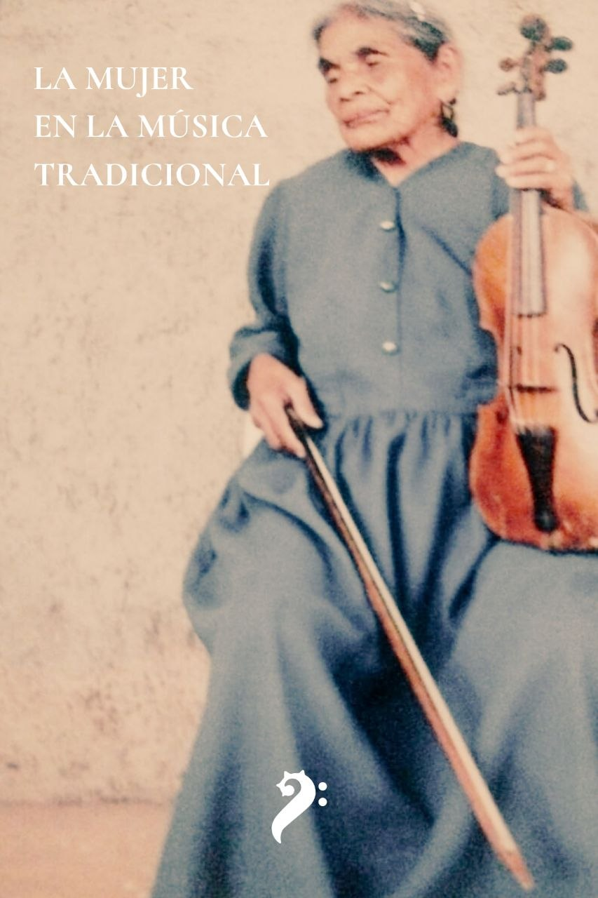

La mujer en la música tradicional
- Editores
- Jorge Amós Martínez Ayala · Héctor Isaac Borges Montaño · José Ignacio Maldonado Cerano
- ISBN
- 978-607-69464-5-9
- Páginas
- 183 · Descarga gratuita
Reseña
Reseña del volumen registrada en el catálogo ISBN.
Registro ISBN: isbnmexico.indautor.cerlalc.org